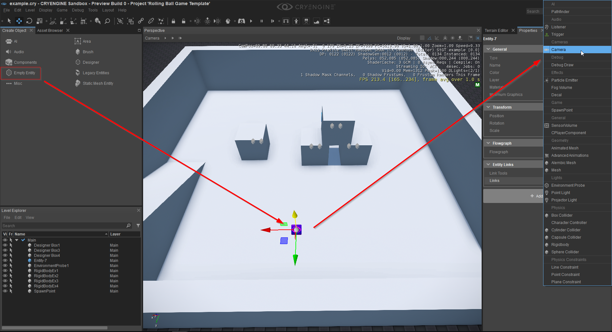
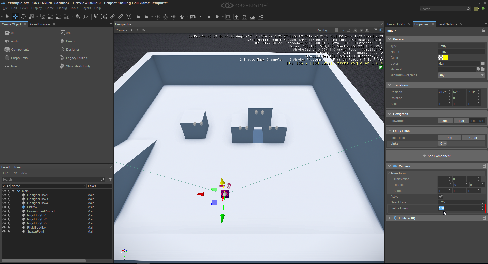
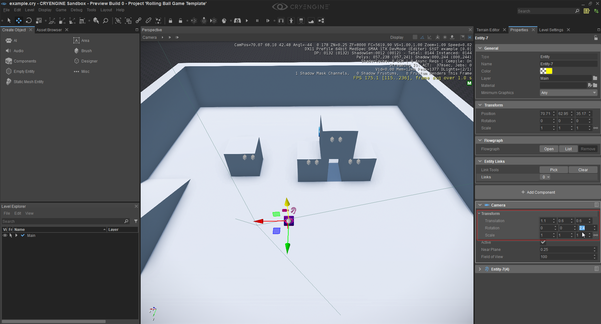

Использование компонента камеры
В этом уроке будет объяснен компонент камеры. Компонент камеры добавляет камеру в сцену, которую затем можно активировать с помощью C++/C# или Схема. Я бы также рекомендовал посмотреть Компоненты сущности документацию, чтобы понять или посмотреть, что делают конкретные атрибуты.
- Сначала создайте новый объект с компонентом камеры. Нажмите кнопку «Пустой объект» на панели «Создать объект» и поместите объект на уровень. После этого выберите объект и нажмите кнопку «Добавить компонент» на панели «Свойства» и выберите компонент камеры.
Создание пустой сущности и добавление к ней компонента камеры.
- Компонент камеры теперь предоставляет все атрибуты, и мы можем начать их настраивать. После добавления компонента камеры вы также должны увидеть еще один компонент. Этот компонент является прослушивателем звука камеры, и в большинстве случаев его можно игнорировать. Теперь мы можем изменить поле зрения камеры или изменить смещение ближней плоскости, которое отвечает за отсечение объектов, находящихся слишком близко к вашей камере. Чтобы изменить любое значение, щелкните поле атрибута и либо перетащите значение, либо введите нужное значение.
Изменение поля зрения.
- Над атрибутом «Поле обзора» находится атрибут «Активный», который определяет, должна ли камера быть активной по умолчанию. Здесь важно отметить, что одновременно может быть активной только одна камера, а это означает, что если кто-то создаст новую камеру, она будет использоваться движком. Компонент камеры также можно перемещать или вращать. Для этого откорректируйте значения атрибута «Трансформация».
Изменение трансформации камеры.